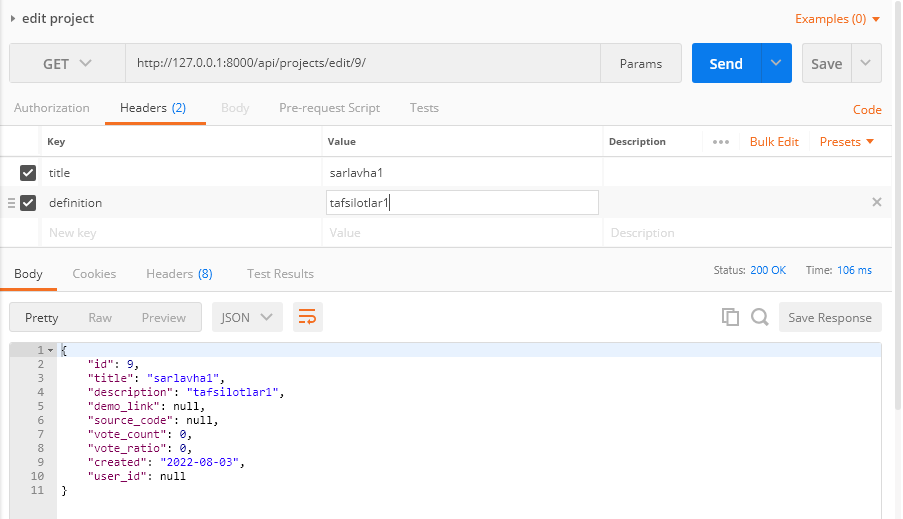
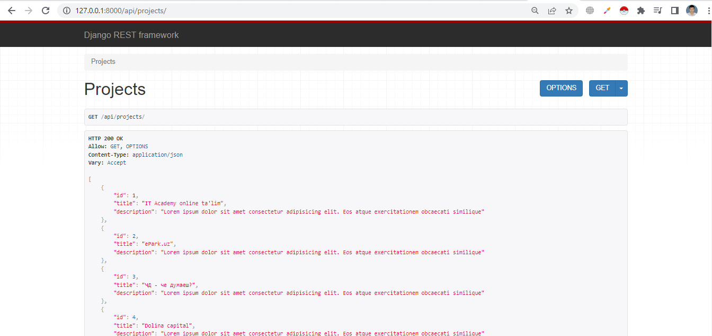
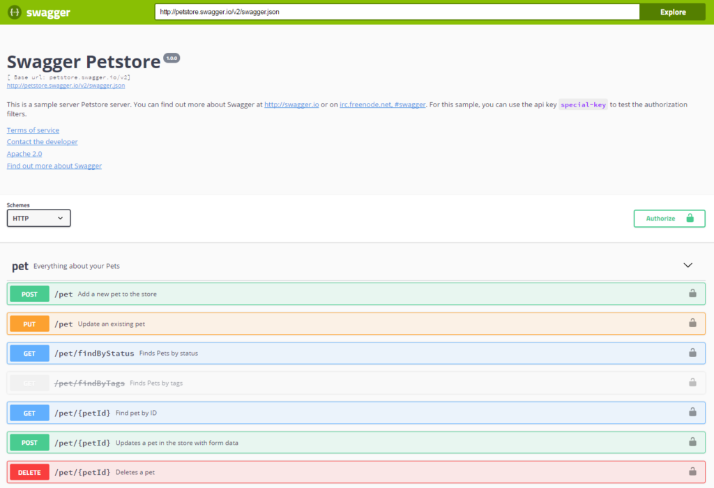
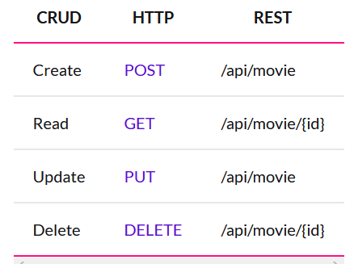
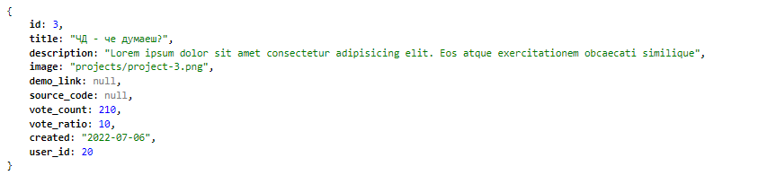
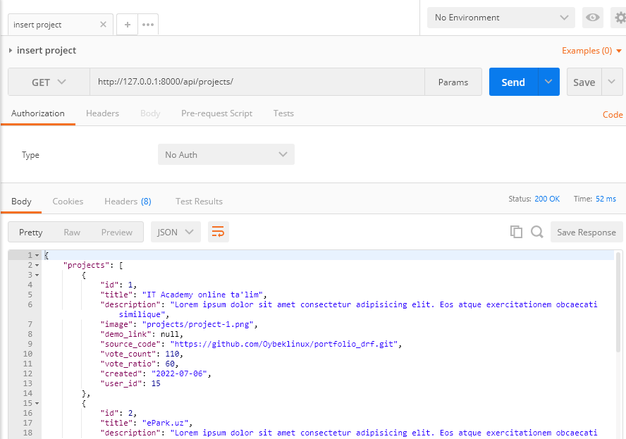
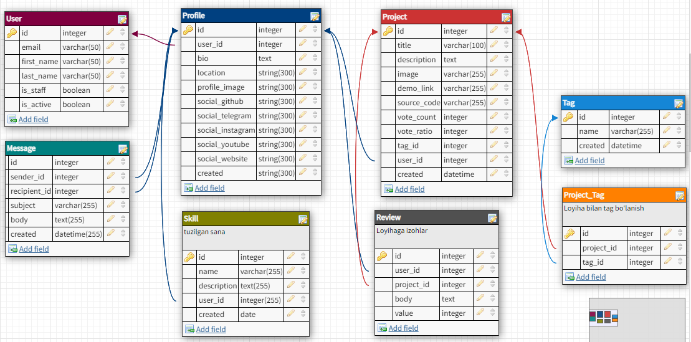

Mavzu 9: Serializer. Pagination. Filtering. Security¶
Reja:¶
1. Bilim¶
1.1 Terminlar¶
2. Amaliyot. O'qituvchi¶
Reja:
- 2.1 Serializer
- 2.1.1 Tarmoqli serializer
- 2.1.2 Metod qo'shish
- 2.1.3 Validatsiya
- 2.2 Sahifalash - pagination
- 2.2.1 PageNumberPagination
- 2.2.4 LimitOffsetPagination
- 2.3 Filtrlash - filter
- 2.3.1 Filtrlash - Filter
- 2.3.2 Qidirish - Search
- 2.3.3 Tartiblash - Order
2.1 Serialayzer¶
2.1.1 Tarmoqli serializer¶
Masala 1¶
Masala shuki, bazada muallif va kitob modeli bor. Shunday API kerakki unda hamma mualliflarni qaytarsin, har bir muallif bilan birga u maulliflarga tegishli kitoblar ro'yxatini ham qaytarsin
Qadamlar:
- Yangi loyiha ochamiz. Nomi: books
- Yangi model (class/jadval) ochamiz
- Yangi tarmoqli serialayzer yozamiz
- Classga asoslangan view yozamiz
- URL marshrutlarni yozamiz
- Browzerda va Postman da test qilamiz
Qadam 1¶
>>> django-admin startproject books .
>>> python manage.py startapp product
settings.py
INSTALLED_APPS = [
'django.contrib.admin',
'django.contrib.auth',
'django.contrib.contenttypes',
'django.contrib.sessions',
'django.contrib.messages',
'django.contrib.staticfiles',
'rest_framework',
'product.apps.ProductConfig'
]
Qadam 2¶
product/models.py
from django.db import models
# Create your models here.
class Author(models.Model):
first_name = models.CharField(max_length=50)
last_name = models.CharField(max_length=50)
class Book(models.Model):
title = models.CharField(max_length=50)
rating = models.IntegerField()
author = models.ForeignKey(Author, on_delete=models.CASCADE, related_name="books")
Qadam 3¶
product/serializers.py
from rest_framework import serializers
from .models import *
class BookSerializer(serializers.ModelSerializer):
class Meta:
model = Book
fields = '__all__'
class AuthorSerializer(serializers.ModelSerializer):
books = BookSerializer(read_only=True, many=True)
class Meta:
model = Author
fields = '__all__'
Qadam 4¶
product/views.py
from .models import *
from .serializers import *
from rest_framework import generics
class AuthorListView(generics.ListCreateAPIView):
queryset = Author.objects.all()
serializer_class = AuthorSerializer
class AuthorDetailView(generics.RetrieveUpdateDestroyAPIView):
queryset = Author.objects.all()
serializer_class = AuthorSerializer
class BookListView(generics.ListCreateAPIView):
queryset = Book.objects.all()
serializer_class = BookSerializer
class BookDetailView(generics.RetrieveUpdateDestroyAPIView):
queryset = Book.objects.all()
serializer_class = BookSerializer
Qadam 5¶
books/urls.py
from django.contrib import admin
from django.urls import path, include
urlpatterns = [
path('admin/', admin.site.urls),
path('api/', include('product.urls')),
]
product/urls.py
from django.urls import path
from .views import *
urlpatterns = [
path('books/', BookListView.as_view()),
path('books/<int:pk>', BookDetailView.as_view()),
path('authors/', AuthorListView.as_view()),
path('authors/<int:pk>', AuthorDetailView.as_view()),
]
Qadam 6¶
>>> python manage.py makemigrations
>>> python manage.py migrate
>>> python manage.py runserver
Quyidagi mualliflarni kiriting:
1. Abdulhamid Cho ʻlpon
2. Abdulla Qodiriy
Quyidagi kitoblarni kiritib chiqing:
1. Abdulhamid Cho ʻlpon
{
"title": "Kecha va kunduz",
"rating": 50,
},
{
"title": "Vayronalar orasidan",
"rating": 100,
}
2. Abdulla Qodiriy
{
"title": "O ʻtkan kunlar",
"rating": 150,
},
{
"title": "Mehrobdan chayon",
"rating": 200,
},
{
"title": "Obid ketmon",
"rating": 60,
}
Natija:

Masala 2¶
Loyihalar API sidan kelayotgan userni id emas, balki obyekt ko'rinishida qaytarish kerak

class ProjectSerializer(serializers.ModelSerializer):
user = UserForProjectSerializer(many=False)
class Meta:
model = Project
fields = '__all__'
Natija:
Masala 3¶
Loyihalar API sidan kelayotgan tag id lari ro'yxatini o'rniga tag obyektlari ro'yxatini qaytarish kerak
class ProjectSerializer(serializers.ModelSerializer):
user = UsersSerializer(many=False)
tag = TagSerializer(many=True)
class Meta:
model = Project
fields = '__all__'

2.1.2 Metod qo'shish¶
Masala 4¶
Loyihalar API sidan shu loyihaga berilgan fikrlar (Review) ham qaytsin
Endi bu metodni yozib SerializerMethodField yordamida hususiyat kabi chiqaradigan qilamiz:
class ProjectSerializer(serializers.ModelSerializer):
user = UsersSerializer(many=False)
tag = TagSerializer(many=True)
reviews = serializers.SerializerMethodField()
class Meta:
model = Project
fields = '__all__'
def get_reviews(self, obj):
reviews = obj.review_set.all()
serializer = ReviewSerializer(reviews, many=True)
return serializer.data
Natija:

2.1.3 Validatsiya¶
Built-in validatsiya¶
Bular model orqali beriladi. Masalan
from django.db import models
from users.models import Profile
class Skill(models.Model):
name = models.CharField(max_length=100)
description = models.TextField()
created = models.DateField(auto_now_add=True)
user = models.ForeignKey(Profile, on_delete=models.SET_NULL, null=True, related_name="user_skills")
- name hususiyatiga 10 tadan oshiq harflar kiritib ko'ring, xatolik beradi. Chunki max_length=10
- description hususiyatini bo'sh qoldirib kiritib ko'ring xatolik beradi
Yuqoridagilar cheklovlar validaysiya ro'lini bajaradi
Cheklovlar ko'p, ulardan yana ba'zilarini keltiramiz:
- blank=True - qiymat bo'sh bo'lsa, bo'sh satrni oladi
- null=True - bazada null qiymat saqlanishi mumkin
Validatsiya yozish¶
Hususiy validatsiya¶
Qiymatni shartga tekshiradigan qilish uchun serializer ga yozsak bo'ladi. Qachonki is_valid() metodi chaqirilganda mana shu metodlar ishga tushadi. Uni yozish uchun nomlanish qoidasiga rioya qilish kerak. Yozilgna metod quyidagicha bo'lishi kerak:
def validate_hususiyat(self, value):
...
Masala 1. Skill jadvaliga kiritilayotgan malaka nominida son bo'lmasin. Endi bu shartni tekshiradigan qilish uchun SkillSerializer ga qo'shimcha metod yozamiz:
import re
from rest_framework import serializers
from .models import Skill
class SkillSerializer(serializers.ModelSerializer):
class Meta:
model = Skill
fields = '__all__'
def validate_name(self, value):
if re.search('\d', value):
raise serializers.ValidationError('Malaka nomida son kelmasin')
return value
Natija:

Umumiy validatsiya¶
Umumiy validatsiya validate() metodida yoziladi:
from rest_framework import serializers
from .models import Skill
from users.serializers import *
import re
class SkillSerializer(serializers.ModelSerializer):
class Meta:
model = Skill
fields = '__all__'
def validate(self, data):
if re.search('\d', data['name']):
raise serializers.ValidationError('Malaka nomida son kelmasin')
if 1 < len(data['description']) < 10:
raise serializers.ValidationError('Tavsif 10 harfdan kam bo''lmasin')
data['name'] = data['name'].lower()
return data
Natija:


2.2 Sahifalash - pagination¶
2.2.1 PageNumberPagination¶
Avvalgi books loyihasini davvom ettiramiz
2.2.1.1 Global daraja¶
Sahifalashni global e'lon qilish uchun settings.py ga quyidagi yangi yozuvlarni kiritamiz. Bu holda setting.py faylidagi pagination sozlamalari hamma Generic view va ViewSet classlariga tasir qiladi. Mixin va APIVIEW larda uni alohida ko'rsatish kerak bo'ladi
settings.py
# ... bu yerda kodlar bor
REST_FRAMEWORK = {
'DEFAULT_PAGINATION_CLASS': 'rest_framework.pagination.PageNumberPagination',
'PAGE_SIZE': 2
}
# ... bu yerda kodlar bor
Izoh:
- PAGE_SIZE - bitta sahifada obyektlar soni. Ya'ni mazkur holatda bitta sahifada 2 ta kitob bo'ladi
- DEFAULT_PAGINATION_CLASS - pagination classni ko'rsatish uchun ishlatiladi.
- PageNumberPagination - Bu class ni ishlatsak, url http://127.0.0.1:8000/api/books/?page=2 ko'rinishda bo'ladi, ya'ni faqat sahifani raqami beriladi
Ishga tushirib bravzerdan api/books/ va api/authors/ apilariga kirazmi
Natija:

2.2.1.2 Class daraja¶
Class darajada pagination sozlamalari settings.py faylida emas, balki class (genericview, ViewSet) ichida beriladi
Hozirgi holatda mualliflar ham sahifalanib chiqadi:

- Endi faqatgina api/authors/ APIsidan paginationni olib tashlaymiz. Buning uchun AuthorListView classida pagination_class = None deb yozamiz
product.views.py
class AuthorListView(generics.ListCreateAPIView):
queryset = Author.objects.all()
serializer_class = AuthorSerializer
pagination_class = None
Natija:

- Faqatgina api/authors/ APIsida sahifalash boshqacha bo'lsin. Masalan bitta sahifada bitta obyekt bo'lsin. Buning uchun alohida PageNumberPagination classdan voris bo'lgan class yozamiz. Keyin uni AuthosListView classining pagination_class hususiyatiga yozamiz
from .serializers import *
from rest_framework import generics
from rest_framework.pagination import PageNumberPagination
class AuthorPagination(PageNumberPagination):
page_size = 1
class AuthorListView(generics.ListCreateAPIView):
queryset = Author.objects.all()
serializer_class = AuthorSerializer
pagination_class = AuthorPagination
Natija:

2.2.4 LimitOffsetPagination¶
- Faqatgina api/authors APIsida bitta sahifada nechta obyekt bo'lishini klient tarafidan ko'rsata olsin. Buning uchun LimitOffsetPagination ni pagination_class ga ko'rsatamiz.
from rest_framework.pagination import PageNumberPagination, LimitOffsetPagination
class AuthorListView(generics.ListCreateAPIView):
queryset = Author.objects.all()
serializer_class = AuthorSerializer
pagination_class = LimitOffsetPagination
Bizda settings.py faylida PAGE_SIZE da 2 soni berilgna, bizda ham 2ta muallif bor, keyingi sahifa havolasini ko'rish uchun yana bitta muallif kiritamiz:

Natijani ko'ramiz:

2.3 Filtrlash - filter¶
Django da Filter ga filtr, tartiblash, qidirish funksiyalari kirib ketadi, bularni quyida birin ketin ko'rib o'tamiz. Bularni ham yuqoridagidek global va class darajasida sozlash mumkin. Endi ularni alohida yozib o'tirmaymiz
Izoh:
- filter - bu ayni shu qiymatga teng bo'lganlarni topib beradi
- search - berilgan qiymat ko'rsatilgan hususiyatning boshida , ohirida, orasida kelganlarni qidirib topib beradi
- order - o'sish yoki kamayish tartibida chiqarib beradi
2.3.1 Filtrlash - Filter¶
Filterni ishlatish uchun uni avval o'rnatib olamiz
>>> pip install django-filter
settings.py
INSTALLED_APPS = [
'django.contrib.admin',
'django.contrib.auth',
'django.contrib.contenttypes',
'django.contrib.sessions',
'django.contrib.messages',
'django.contrib.staticfiles',
'rest_framework',
'product',
'django_filters'
]
- books loyihasida hamma APIlarni filterlash imkoni bo'lsin. Mualliflarni hamma hususiyati bo'yicha, kitobni esa faqat title bo'yicha filtrlasin
settings.py
REST_FRAMEWORK = {
'DEFAULT_PAGINATION_CLASS': 'rest_framework.pagination.PageNumberPagination',
'PAGE_SIZE': 2,
'DEFAULT_FILTER_BACKENDS': ['django_filters.rest_framework.DjangoFilterBackend']
}
Bu yerda filter global qilib e'lon qilindi. Endi Har bir classga alohida qaysi hususiyati bo'yicha filtrlash kerakligini ko'rsatamiz
product/views.py
# ...
class AuthorListView(generics.ListCreateAPIView):
queryset = Author.objects.all()
serializer_class = AuthorSerializer
pagination_class = LimitOffsetPagination
filterset_fields = '__all__'
# ...
class BookListView(generics.ListCreateAPIView):
queryset = Book.objects.all()
serializer_class = BookSerializer
filterset_fields = ['title']
# ...
Izoh:
- filterset_fields - bu yerga filtrlash uchun modelning hususiyati ko'rsatiladi
Mualliflarni hamma hususiyati bo'yicha filtrlasin deb yozdik (filterset_fields = 'all')
Kitoblarni esa faqat title bo'yicha filtrlasin deb yozdik (filterset_fields = ['title'])
Natija:
Mualliflarni filtrlash

Kitoblarni filtrlash

Muallif ismi bo'yicha filtrlaymiz

2.3.2 Qidirish - Search¶
Avval global darajada berib qo'yamizsettings.py
Qidirsh imkoniyatlari:
- '' - harfa katta kichikligidan qat'iy nazar qidiradi
- '^' - boshidan qidiradi
- '=' - ayni teng bo'lganini qidiradi
- '@' - Katta matndan qidiradi FTS-Full text search deb nomlanadi va bu faqat PostgreSQL da ishlaydi
- '$' - regex usulida qidirish
REST_FRAMEWORK = {
'DEFAULT_PAGINATION_CLASS': 'rest_framework.pagination.PageNumberPagination',
'PAGE_SIZE': 2,
'DEFAULT_FILTER_BACKENDS': ['django_filters.rest_framework.DjangoFilterBackend', 'rest_framework.filters.SearchFilter']
}
- Kitobni nomi orqali qidirish imkoni bo'lsin, lekin bu holda so'z sarlavha orasida, ohirida, boshida kelsa ham qaytarsin
product/views.py Qaysi hususiyatlarni qidirish kerakligini search_fields hususiyatida ko'rsatib qo'yamiz
class BookListView(generics.ListCreateAPIView):
queryset = Book.objects.all()
serializer_class = BookSerializer
filterset_fields = ['title']
search_fields = ['title']
Ya'ni faqat title bo'yicha qidirsin
Natija:

- Muallifning ismi va familiyasi bo'yicha qidirish imkoni bo'lsin
product/views.py
# ...
class AuthorListView(generics.ListCreateAPIView):
queryset = Author.objects.all()
serializer_class = AuthorSerializer
pagination_class = LimitOffsetPagination
filterset_fields = '__all__'
search_fields = ['first_name', 'last_name']
# ...
Natija:
'iy' harflarini berganda u ham ism ham sharifdan qidiradi
- Muallif ismida yoki sharifi boshidan qidirsin
product/views.py
# ...
class AuthorListView(generics.ListCreateAPIView):
queryset = Author.objects.all()
serializer_class = AuthorSerializer
pagination_class = LimitOffsetPagination
filterset_fields = '__all__'
search_fields = ['^first_name', '^last_name']
# ...
Natija:
Agar 'qo' ni yozsak, Qodiriy ismida uchraydi

Agar 'iy' ni yozsak, hech qaysi ism yoki sharif boshida uchramaydi

2.3.3 Tartiblash - Order¶
Avval global darajada berib qo'yamizsettings.py
REST_FRAMEWORK = {
'DEFAULT_PAGINATION_CLASS': 'rest_framework.pagination.PageNumberPagination',
'PAGE_SIZE': 2,
'DEFAULT_FILTER_BACKENDS': ['django_filters.rest_framework.DjangoFilterBackend',
'rest_framework.filters.SearchFilter',
'rest_framework.filters.OrderingFilter']
}
Natijada bizda APIlarda tartiblash imkoni mavjud bo'ladi
Agar alohida ko'rsatmoqchi bo'lsak, u holda ordering_fields hususiyatida ko'rsatamiz
- Kitoblarni nomi bo'yicha tartiblab bering
product/views.py
# ...
class BookListView(generics.ListCreateAPIView):
queryset = Book.objects.all()
serializer_class = BookSerializer
filterset_fields = ['title']
search_fields = ['title']
ordering_fields = ['title']
# ...
Natija:

Teskari tartiblash

2.4 Havfsizlik - security¶
3. Amaliyot. O'quvchi¶

Quyida portfolio bo'yicha vazifalar keltirilgan:
- users/ API da foydalnuvchi va unga tegishli hamma loyihalar chiqsin
- users_received_message/ API da foydalnuvchi va unga tegishli hamma unga yuborilgan habarlar chiqsin
- users_sent_message/ API da foydalnuvchi va unga tegishli hamma u yuborgan habarlar chiqsin
- project_review/ API da loyiha va unga berilgan hamma izohlar chiqsin
- posrtfolio loyihasidagi hamma APIlar pagination bilan chiqsin
- Faqatgin loyihalar APIsida sahifadagi loyihalar soni ko'rsatish imkoni bo'lsin
- Habarlar APIsida bitta sahifadagi habarlar soni global page_size dan farqli bo'lsin
- Loyihalarni nomi orqali qidirish imkoni bo'lsin
- Habarlarni nomi va kontenti orqali qidirish imkoni bo'lsin
- Loyihalar nomi bo'yicha tartiblash imkomi bo'lsin
- Foydalanuvchilar nomi bo'yicha tartiblash imkomi bo'lsin